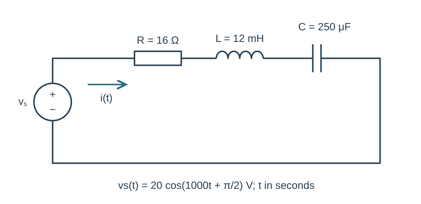
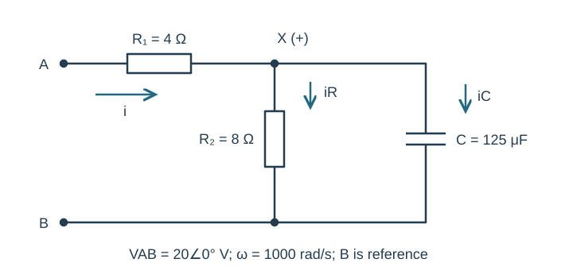
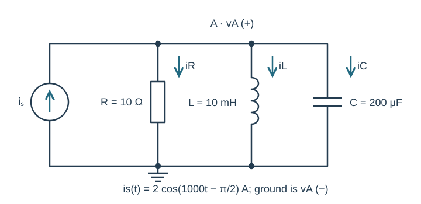
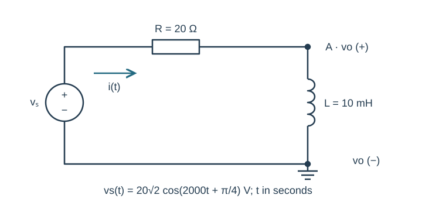
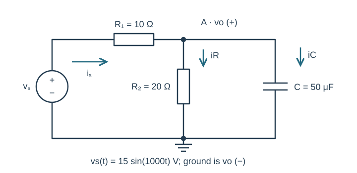

Course practice / Batch 10 / 2026-10-11 PDT
ENGR 202
正弦、相量与阻抗
Sinusoids, phasors & impedance · 第 10 组：HW 1 风格 5 题 + HW 2 风格 5 题
Translate a waveform whose time input is in milliseconds
A voltage is specified by \(v=7\cos(0.4\pi t_{ms}-\pi/5)\;\mathrm V\), where \(t_{ms}\) is the numerical time measured in milliseconds.
- Rewrite the equation using time t in seconds, and find peak amplitude, phase in degrees, frequency and period.
- Find v(0), the first positive maximum, and the first downward zero crossing at or after t = 0. Give event times in ms.
- Draw one period with correctly labeled time and voltage axes and mark the two events.
中文提示（不含解答）
t_ms 与以秒计的 t 相差 1000 倍；不要直接把毫秒表达式的系数当作 rad/s。
A negative sine is advanced by a quarter period
Let \(x(t)=-5\sin(600t-\pi/6)\;\mathrm V\). Define \(y(t)=x(t+\pi/1200\;\mathrm s)\).
- Write positive-amplitude cosine expressions and peak phasors for x and y, using principal phases in (−180°,180°].
- Find the time advance in ms and as a fraction of a period. Explain its effect on the cosine phase.
- Find x(0), y(0), x(T/4), and y(T/4), then sketch the relative displacement of the two waveforms.
中文提示（不含解答）
负的正弦可以先改写为余弦；提前相当于给相位增加 ωΔt。
Use a conjugate pair to simplify a ratio
Let \(a=4+j3\) and \(b=4-j3\).
- Find a + b, a − b, ab and a/b in rectangular form.
- Convert a, b, a − b and a/b to polar form with positive magnitude and principal phase.
- Check that the magnitude of a/b is one, verify (a/b)b = a, and draw a and b on equally scaled complex axes.
中文提示（不含解答）
共轭的幅值相同、相位相反；商的幅值不能靠实部单独判断。
Subtract a cosine that is already shifted
At a common angular frequency, \(v(t)=10\cos(800t)-6\cos(800t+\pi/3)\;\mathrm V\).
- Write the two unsigned component phasors and subtract them to obtain V in rectangular and polar form.
- Express v(t) as one positive-amplitude cosine. Verify it against the original expression at t = 0 and t = π/1600 s.
- Draw the subtraction as tip-to-tail addition of the first phasor and the negative of the second. Label real/imaginary axes in V with the same scale.
中文提示（不含解答）
先写第二项本来的相量，再整体取负；不能只减幅值而保留原相位。
A sine coefficient fixes the direction of a phasor
A waveform has the form \(v(t)=a\cos(1200t)+b\sin(1200t)\;\mathrm V\). Its peak magnitude is 13 V, v(0) = 5 V, and v(T/4) is negative, where T is the period.
- Find a and b, then give the cosine-reference peak phasor in rectangular and polar form.
- Write one positive-amplitude cosine and predict v(T/4), v(T/2), and v(3T/4).
- Draw the phasor in the correct quadrant and explain why the sign of v(T/4) resolves the two possible phases.
中文提示（不含解答）
v(0) 给出余弦系数；幅值平方等于两个系数平方和，另一采样点的信息用于选择正负号。
The source is ninety degrees ahead of a cosine
The source \(v_s(t)=20\cos(1000t+\pi/2)\;\mathrm V\) drives series R = 16 Ω, L = 12 mH, C = 250 μF. Current is clockwise from the source positive terminal, and all element voltages are passive drops along that current.
- Draw the impedance circuit and find the source, total-impedance and current phasors in rectangular and polar form.
- Write i(t), calculate VR, VL and VC, and verify KVL. State the phase difference between current and source voltage.
- Find i(0) and i(π/2000 s). Check them using your time-domain current.

中文提示（不含解答）
源相位和阻抗相位分别处理；求电流相位时减去阻抗相位。
Combine a resistor with a parallel RC section
At ω = 1000 rad/s, terminal A connects through R₁ = 4 Ω to node X. R₂ = 8 Ω and C = 125 μF each connect from X to terminal B. Define input current from A toward X and both branch currents from X toward B. Apply VAB = 20∠0° V peak, with B the reference node.
- Find the parallel equivalent ZXB and total input impedance ZAB in rectangular and polar form.
- Find input current and the node-X voltage relative to B.
- Find resistor and capacitor branch currents and verify KCL at X. Check the source voltage by adding the R₁ drop and node voltage.

中文提示（不含解答）
电容只与第二个电阻并联；第一个电阻最后与并联等效相加。
A shifted current source supplies three parallel elements
The source \(i_s(t)=2\cos(1000t-\pi/2)\;\mathrm A\) injects current upward into node A. R = 10 Ω, L = 10 mH and C = 200 μF each connect directly from A to ground. Define vA positive at A and all three element currents downward.
- Draw the impedance circuit, convert the source to its peak phasor, and find total admittance and equivalent impedance.
- Find VA in rectangular/polar form and write vA(t). Calculate all three branch-current phasors and verify their sum equals Is.
- Evaluate vA(0) and vA(π/2000 s). Explain why the negative real part of VA does not mean its peak magnitude is negative.

中文提示（不含解答）
并联时先加导纳；源本身的 −90°也必须带入计算，最后检查电压所处象限。
An inductor output can have a simple phase
The source \(v_s(t)=20\sqrt2\cos(2000t+\pi/4)\;\mathrm V\) drives R = 20 Ω followed by L = 10 mH in a series loop. The lower end of L is grounded. Output vo is measured from node A between R and L to ground, with A positive. Current flows from the source through R toward A.
- Draw the impedance circuit. Find total impedance and current in rectangular/polar form.
- Find Vo using voltage division, write vo(t), and check Vs = VR + Vo.
- Compute vo(0) and vo(π/4000 s). Compare the phases of source voltage, current, and output voltage.

中文提示（不含解答）
输出跨在电感上，因此分压分子用电感阻抗；三个量的相位不必相同。
Keep a sine source reference through a loaded RC divider
The source \(v_s(t)=15\sin(1000t)\;\mathrm V\) connects through R₁ = 10 Ω to node A. R₂ = 20 Ω and C = 50 μF each connect from A to ground. Output vo is positive at A. Source current flows through R₁ toward A, with both load currents downward.
- Find the cosine-reference source phasor, parallel-load impedance, total input impedance, and source-current phasor.
- Find Vo in rectangular/polar form and write vo(t). Calculate both load currents and the R₁ voltage drop; verify KCL and KVL.
- Predict vo(0) and vo(π/2000 s). For optional LTspice, state source frequency in Hz and its sine-source phase. Compare these two positions in a late cycle after transients settle, with labeled units and matching reference directions.

中文提示（不含解答）
题目给的是正弦源；相量计算按余弦参考，SPICE 的正弦源设置则按它自己的参考。